Niyodogawa, Kochi: things to do, food and stays
Niyodogawa · Kochi
Niyodogawa
Highlighted on the Kochi map.
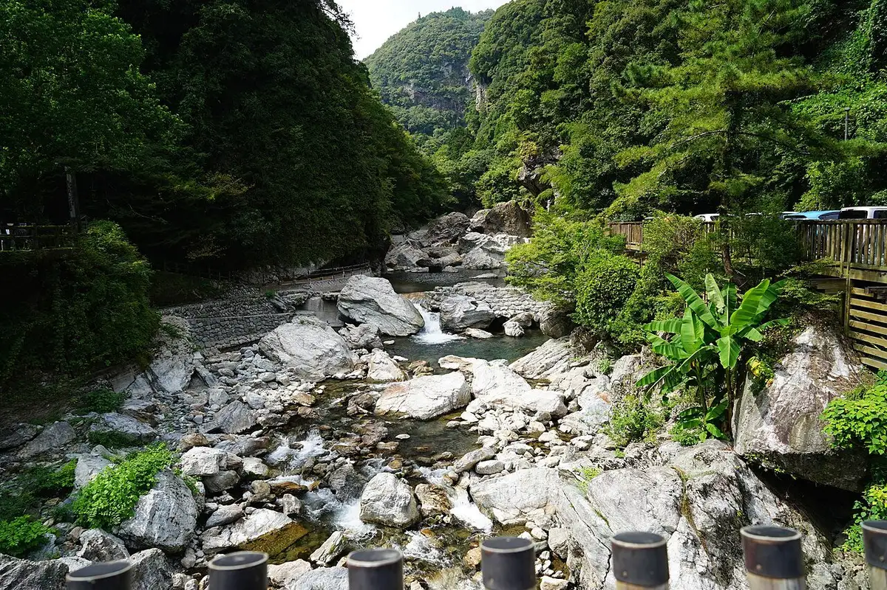
Stay
中津渓谷ゆの森
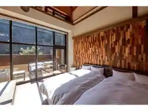
Nakatsu Keikoku Yuno Mori
Inn in Meinogawa, Niyodogawa with riverside setting.
仁淀川町観光センター 秋葉の宿
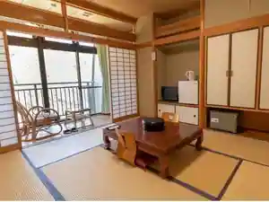
Niyodogawa Machi Kanko Center Akiba No Yado
コテージてっぺん
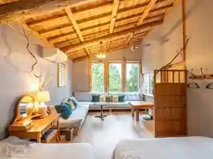
Cottage Teppen
SAUNA CORE
SAUNA CORE
茶農家の宿 和鶴
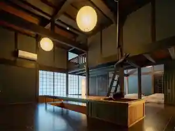
Cha Noka No Yado Wa Tsuru
Inn in Taibimatsuginoshita, Niyodogawa with room-only plans.
Dining
池川茶園
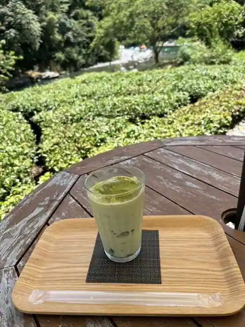
Ikegawa Chaen
ドライブイン引地橋
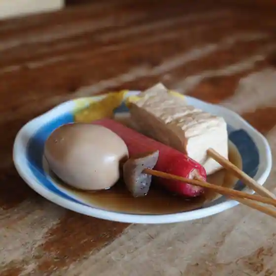
Doraibuin Hikichi Hashi
茶農家の店 あすなろ
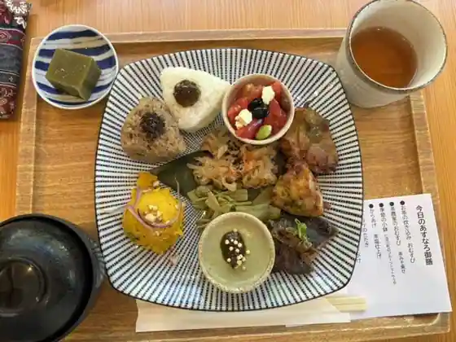
Cha Noka No Asunaro
ゆの森
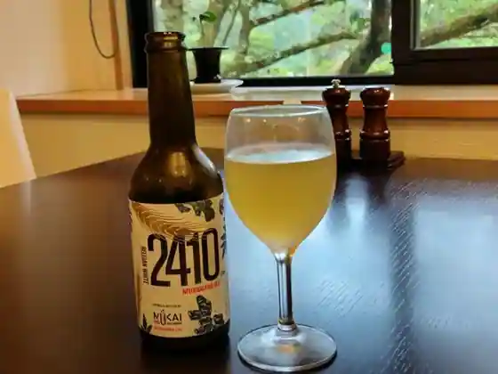
Yuno Mori
宝来荘
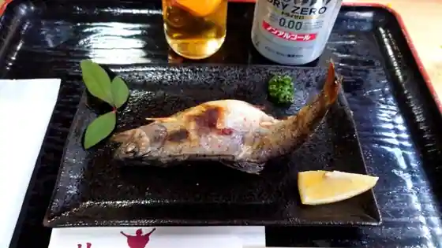
Horai So
BLUE BREW
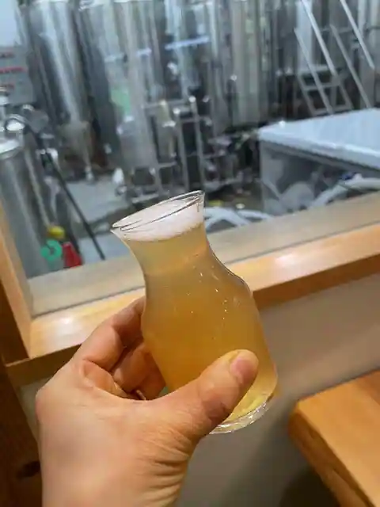
BLUE BREW
PONTE
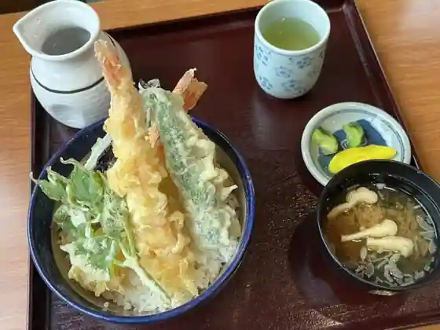
PONTE
CAFEandBEEF かる。
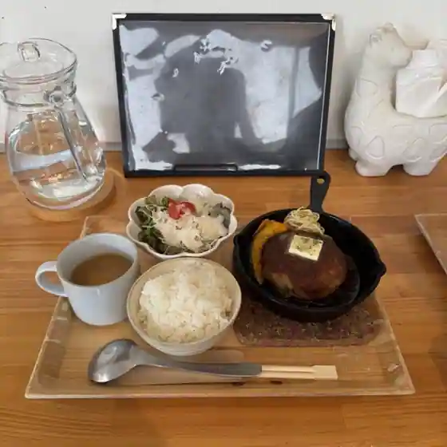
CAFEandBEEF Karu.
えびす茶屋
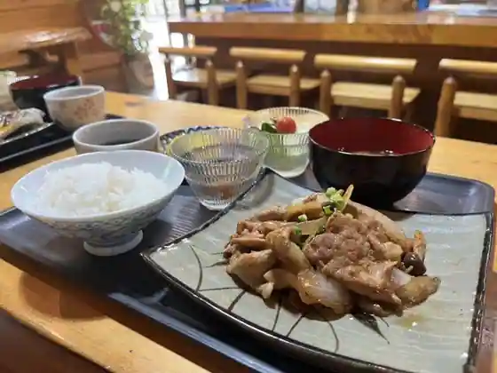
Ebisu Chaya
ジャーマンカフェ
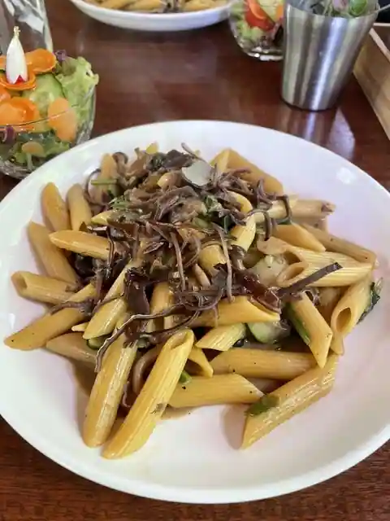
Jaman Cafe
スープカレー トランス
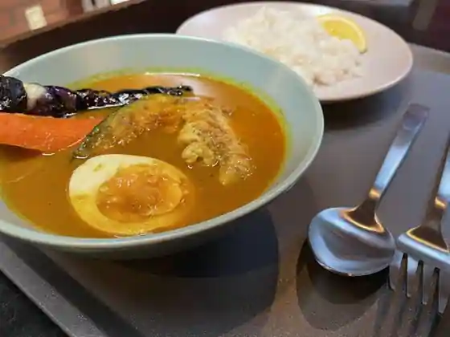
Supukare Toransu
味処 おさき
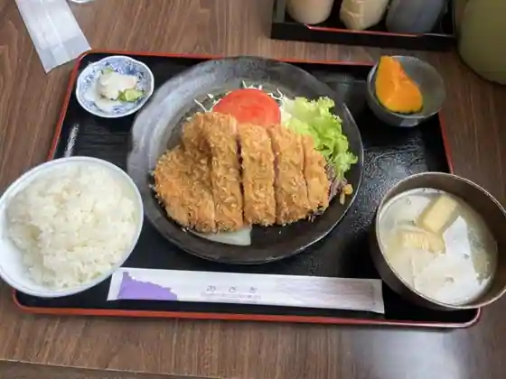
Ajidokoro Osaki
秋葉の宿
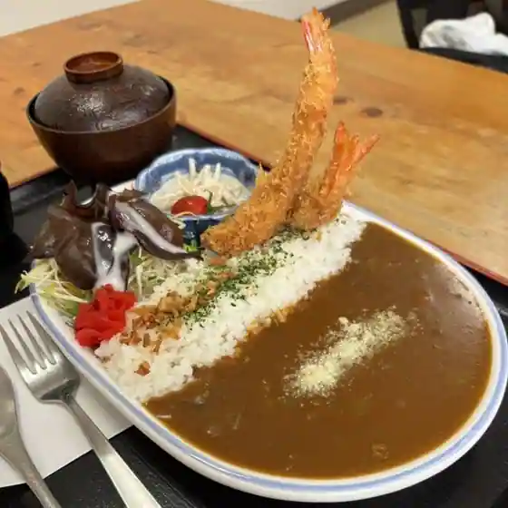
Akiba No Yado
喫茶 おっくん家
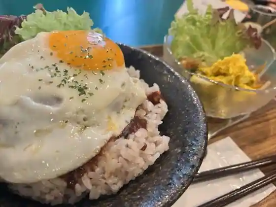
Kissa Okkun Ie
いけがわ４３９交流館
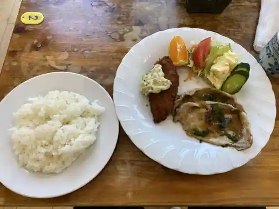
Ikegawa 439 Koryu Kan
さるはし
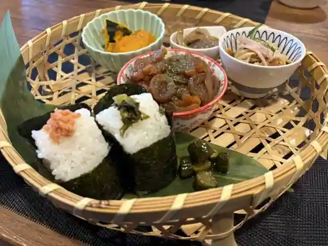
Saruhashi
レストランによど
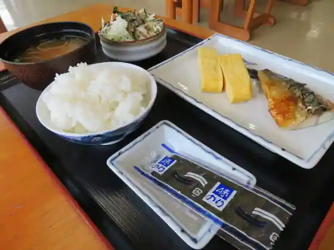
Restaurant Niyodo
きたはら
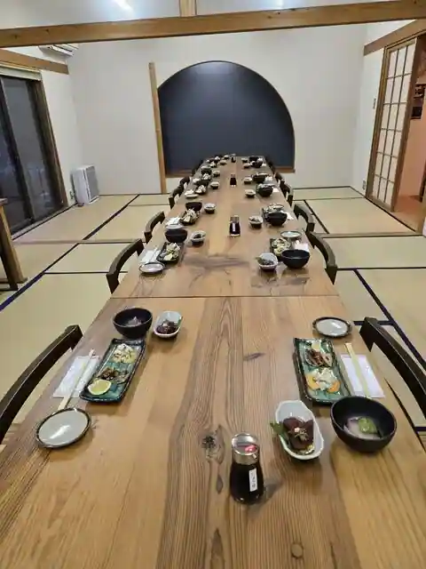
Kitahara
えちごやカフェ
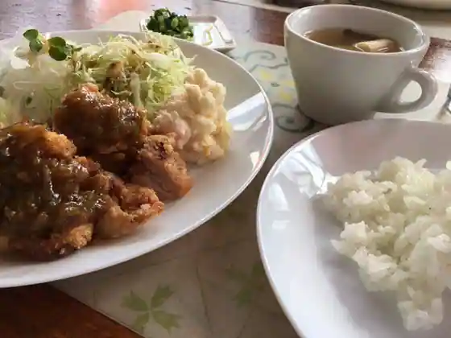
Echigoya Cafe
喫茶㊇まるはち
Kissa Kissa Maruhachi
だんだんの里
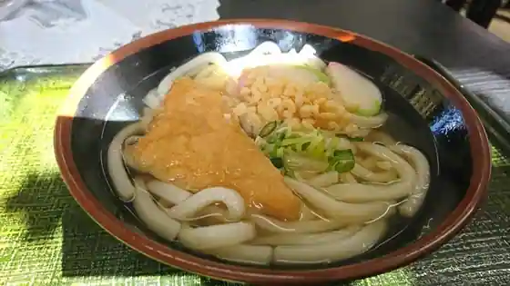
Dandanno Sato
サンファミリーきりやま
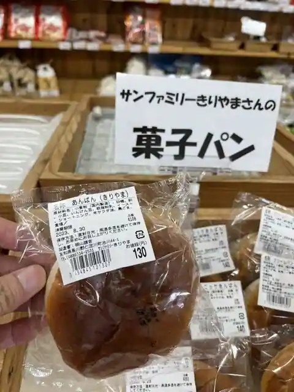
Sanfamiri Kiriyama
喫茶 五番館
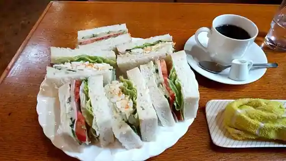
Kissa Goban Kan
Sights
Nakatsu Gorge
Niyodogawa Town Hall
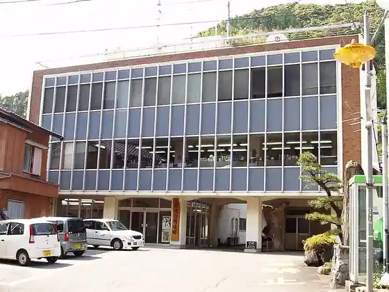
Uryu Falls
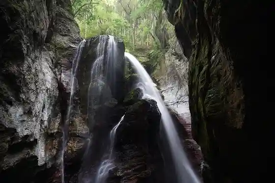
Choja no Tanada
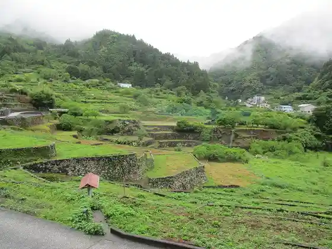
Owatari Dam
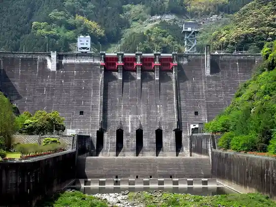
Kaze no Sato Park
Kuki Hashi